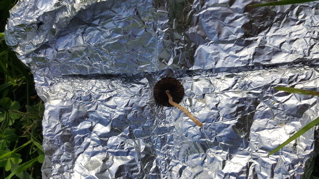
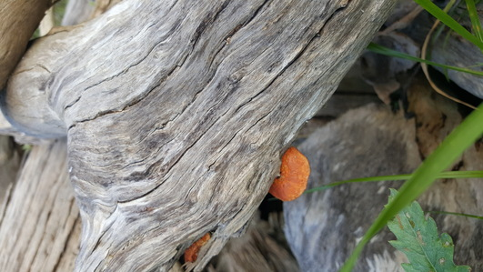

I found this Oxalis growing by the side of a footpath. The white flowers have splashes of purple along the edges and the leaves are linear like those of O.versicolor.
Just some checko eggs. They all seem to have hatched.
If anyone can give me a binomial name for this I would be very grateful. Google and Plantsnap can't seem to identify it.'I found large areas covered with this, so I would love to have a name to attach to it.
Senecio occidentalis grows in abundance on the sandy slopes.
Finally found the first mushroom of the foray. The surrounding area was covered in mole hills and collapsed tunnels, and even scat on the surface. I suspect a Panaeolus species for the larger speciemen but I'm unsure if the smaller cap just lacks the gill coloration because of it's immaturity. Excuse the terrible print quality, the spores did not drop very well.



And some shots of the flowering Oxalis that is visible in the previous photos.
Another prolific species.
It's impossible to miss the bright orange Pycnoporus sanguineus. P.sanguineus can be identified by the denser pore surface compared to other Pycnoporus species.
A San Pedro garden in the middle of a field? üåµüçΩ This was possibly my most important find. When I saw them the species looked familiar, but I could not remember a name. Only a day or what later while walking my dog did I remember the name and what I had read as a teenager about San Pedro.

An identification for this species evades me. I suspect that it grows saprotrophically on the buried roots of the nearby stump. The species growing directly on the stump is the easily identfied as Schizophyllum commune. in its dehydrated state. Excuse the terrible spore print for the first species. I forgot about the prints for a few days and when I finaly remembered to take a look the cap had liquefied. The small feasting worms that hatched probably didn't help either.
Rapist den? Or just a woman that decided to hang three of her panties on the roots of a old dead tree.

Another P.sanguineus indivudual growing from carpenter bee holes.

Some shots for the bryophyte lovers. The dimpel I suspect was made by the overhanging branch. The eucalyptus leaves are highly pointed making for consitant dripping.
Following the mossy trail I came across these great looking LBM's.
Some more moss shots. The lighter cauliflower looking growth is I suspect a type of crustose lichen. The two leafed plant is a species of Massonia. I have not yet found a name for this specific species. Compared to other members of the genus, as I later discovered, the flowers of these are insignificant.